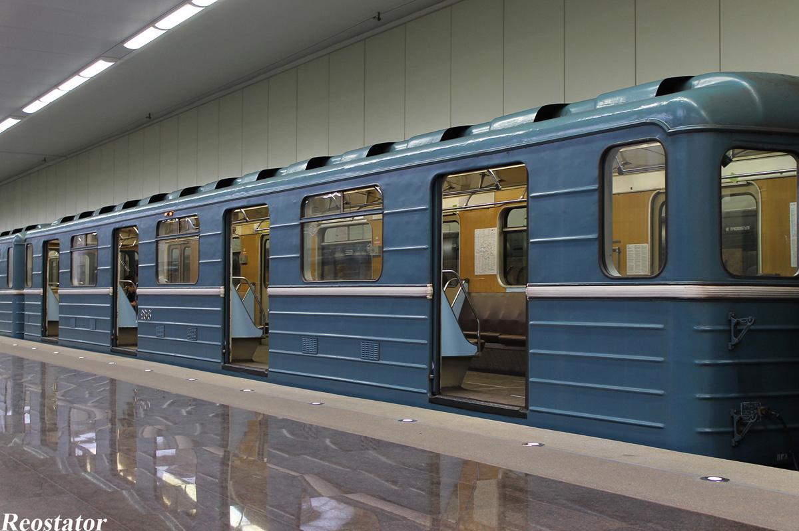
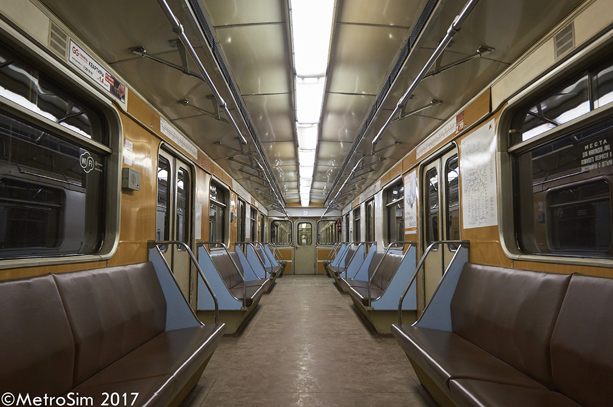

Вагон №9818
Сейчас вы узнаете о вагоне 9818 — одном из самых уникальных и любимых вагонов. Этот вагон имеет необычную историю: он был вагоном-сопровождением путеизмерителя УМ5 №806 и проработал в этой роли более 11 лет.
Общая информация
📅 Постройка
Август 1984
Вагон поступил в депо приписки ТЧ-4 «Красная Пресня»
📍 Последнее местонахождение
ТЧ-16 «Митино»
Утилизирован в июне 2020
📌 Особенность
Вагон-сопровождение
С 1989 по 2000 год сопровождал путеизмеритель УМ5 №806
⚡ Статус
Утилизирован
Июнь 2020, ТЧ-16 «Митино»
⭐ Уникальность: Вагон 9818 — один из немногих вагонов-сопровождений путеизмерителей. Более 11 лет он работал в паре с УМ5 №806, обеспечивая контроль состояния путей Московского метро.
История вагона
Поступление
Вагон поступил в депо приписки ТЧ-4 «Красная Пресня».
Вагон-сопровождение
Вагон начал работу в качестве вагона-сопровождения путеизмерителя УМ5 №806. Эта роль длилась до декабря 2000 года — более 11 лет.
Капитальный ремонт
Вагон прошёл капитальный ремонт на ЗРЭПС. После ремонта пластик на боковинах был заменён на голубой.
Хранение
Вагон находился на хранении в ТЧ-17 «Братеево».
Хранение
Вагон находился на хранении в ТЧ-16 «Митино».
Утилизация
Вагон был утилизирован в ТЧ-16 «Митино».
😔 Вагон утрачен. Память о нём осталась в фотографиях и воспоминаниях энтузиастов.
Экстерьер
Окраска
- Бирюзового цвета с белыми полосами по борту
Рёбра жёсткости
- Два ребра жёсткости
Сигнальные лампы
- Расположение: горизонтальное
Интерьер
Поручни
- Поручни старого образца
Сиденья
- Диваны, обшитые кожзаменителем
Пластик
- 08.1984 — 2007 (примерно): рыжего цвета под дерево
- С 2007 (примерно): тот же пластик, но пластик на боковинах заменён на голубой
Освещение
- Лампы типа ЛПВ-01
🔵 Особенность интерьера: После капитального ремонта 2007 года вагон сохранил рыжий пластик под дерево, но боковины были заменены на голубые — редкое сочетание для номерных вагонов.
Технические характеристики
Модель
81-714 (ММЗ)
Номер
9818
Год постройки
1984
Тип
Вагон-сопровождение
Статус
Утилизирован (06.2020)
Связь с УМ5 №806
Вагон 9818 работал в паре с путеизмерителем УМ5 №806 с декабря 1989 по декабрь 2000 года — более 11 лет совместной работы.
Роль вагона 9818
- Вагон-сопровождение
- Обеспечение работы путеизмерителя
- Перевозка бригады
Путеизмеритель УМ5 №806
- Также утилизирован
- Судьба неизвестна
Фотогалерея

На станции «Котельники».

Последний в Москве вагон 717/714-й серии, сохранивший родной пластик «тёмное дерево»... и то частично.
📸 Фото взяты с transphoto
Нажмите на фото для увеличения
«Вагон 9818 — один из тех уникальных экземпляров, которые остались в памяти энтузиастов. 11 лет работы в паре с путеизмерителем, редкое сочетание рыжего и голубого пластика — всё это делает его по-настоящему особенным».